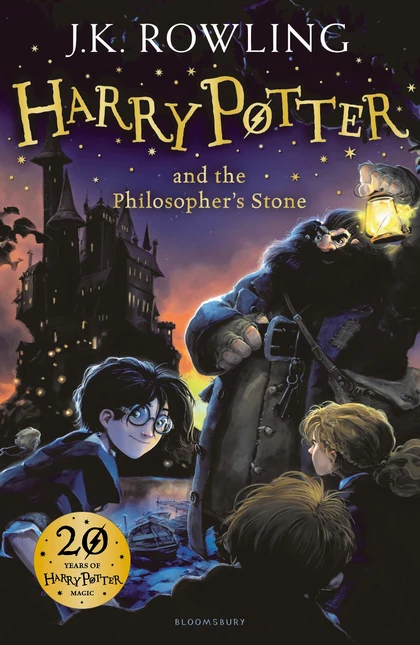
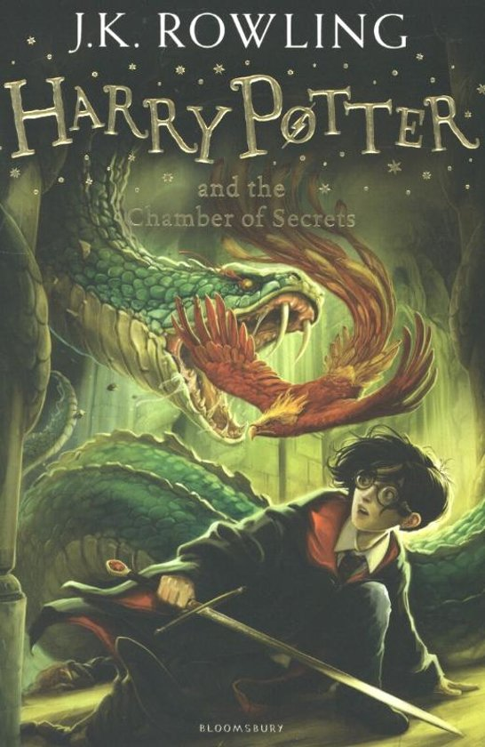
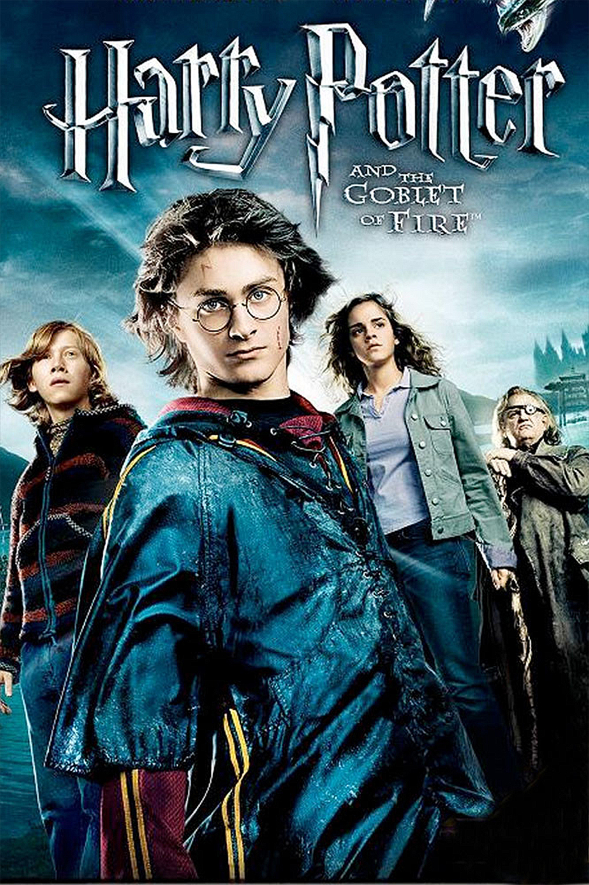
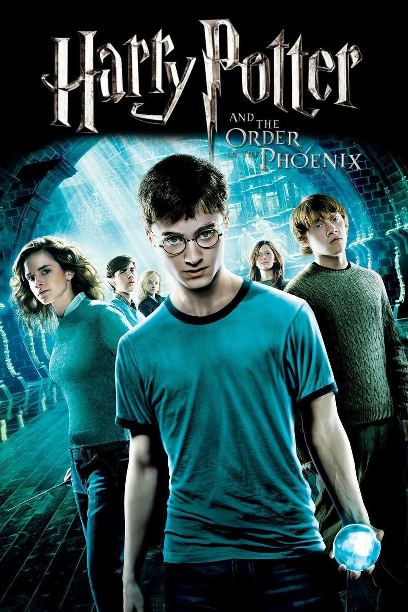
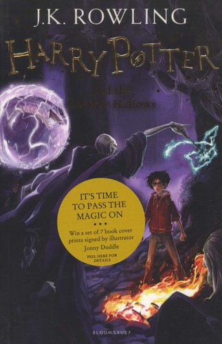

Harry Potter and the Philosopher’s Stone
This is the first novel in the Harry Potter series written by J.K. Rowling. It was released in the U.S under the name Harry Potter and the Sorcerer’s Stone because the publishers didn’t think American readers would be familiar with the term Philosopher, since it’s a British term.
Harry Potter, an orphan whose life is filled with misery, lives with his aunt’s family, the Dursleys. The Dursleys treat him like a servant, making him cook food, clean the house and do all chores, all while he’s only ten years old. His room is a tiny closet under the stairs. On top of all that, he must deal with Dudley, the Dursley’s one and only kid. He is a spoiled kid who is always bullying Harry.
Of course, celebrations like birthdays weren’t something Harry had ever experienced. In fact, he never had a birthday party in 10 years, and the only birthday presents he got were his uncle’s old socks. This all changes on his 11th birthday, when Hagrid, the gamekeeper of Hogwarts School of Witchcraft and Wizardry, shares the news that would change Harry’s entire life. He tells him that he is a wizard and invites him to Hogwarts.
Harry goes to Hogwarts, and encounters things he never thought were real, invisible cloaks, flying brooms, ghosts, talking pictures and many more. For the first time, he meets people who love and care for him, he gets to eat what he wants, gets treated as a human being and gets the freedom to do whatever he likes. He is also made the seeker in Gryffindor’s Quidditch Team, making Harry the youngest Quidditch seeker in Hogwarts history. Sure, he meets some people who he doesn’t get along with, but his friends, Ron, Hermione, Hagrid, all give him a reason to finally be happy in life.
But still, there is one obstacle that is stopping Harry from living a carefree life. His past isn’t leaving him, it was threatening his school, and in turn was taking away his only source of happiness. Voldemort is coming after Harry again, and this time he has one of Hogwarts teachers assisting him. Harry thinks Snape is the one that’s helping Voldemort. Is that true or not, he doesn’t know, but there is one thing Harry knows for sure, he must put an end to this, he must fight even if it means risking his own life.
Harry Potter and the Chamber of Secrets
As Harry’s first year at Hogwarts comes to an end, Harry goes back to his miserable life with the Dursleys. It all begins when Harry is staying in his room because the Dursleys are having a dinner party where they don’t want anyone to know about Harry. Dobby, a house elf, visits Harry and warns him not to return to Hogwarts. Of course, Harry doesn’t listen to that warning, and Dobby as a result wreaks havoc in the kitchen. This makes the Dursleys mad, and Harry gets imprisoned in his room. Fortunately, Ron along with his twin brothers, Fred, and George, steal Harry away in a flying car, and Harry spends the rest of the summer at the Weasleys home.
The new year at Hogwarts begins with an unfortunate event. Harry and Ron discover that they are unable to enter the magically invisible train platform, so they fly the Weasley’s car to Hogwarts. Snape gives them both detention for this because he thinks they did this merely to seek attention. Quidditch starts, and this year Draco Malfoy is made the new Slytherin seeker in Harry’s competition. As Dobby warned, weird things start happening in Hogwarts.
The school caretaker’s cat is petrified, and a threatening message is found written next to the petrified cat. Hermione does some research on this and learns about the Chamber of Secrets, a chamber at Hogwarts that was opened fifty years ago and killed a student. Dobby continues his efforts to make Harry leave Hogwarts. More people continue to be petrified and soon Lockhart, the new Defence Against the Dark Arts teacher at Hogwarts decides to begin a duelling club to teach kids self-defence. During the very first meeting, Harry along with his other classmates discovers that Harry can speak Parseltongue, the language of snakes. This frightens the rest of the school as this is an ability possessed only by the heir of Slytherin, the person responsible for opening the chamber. People start to suspect Harry to be the cause of the issues happening at Hogwarts. This is why Harry must figure out the real culprit behind this to save his reputation and the lives of all those who he loves.
Harry Potter and the Prisoner of Azkaban

This book opens on the night before Harry’s thirteenth birthday. Harry receives presents by Owl Post from his friends at school. On the news, a man named Sirius Black, a runaway criminal, is constantly being mentioned. Aunt Marge, Vernon Dursley’s sister, comes to visit them. She hates Harry and Harry accidentally puts a spell on her that causes her to inflate. Scared from the outcomes of his action, Harry decides to leave the Dursleys house and is picked up by the Knight Bus where he hears whispers about Sirius Black. The Knight Bus drops Harry off at Diagon Alley. There, Harry is greeted by Cornelius Fudge, the Minister of Magic who instead of punishing Harry for using magic outside of Hogwarts, rents a room for Harry to spend his summer. Something is definitely going on, but Harry can’t seem to figure out what. After a while Harry meets Ron and Hermione, and before going back to school, he overhears Ron’s parents discussing how Sirius Black is coming to kill Harry. When Harry talks to Mr. Weasley about his concerns regarding Sirius Black, he makes Harry promise to not go after Sirius.
While travelling the Hogwarts Express train, the train is stopped because Dementors need to search for Sirius Black. Harry faints at the sight of a Dementor and regains his consciousness with Professor Lupin’s help, his new Defence Against the Dark Arts teacher. His classes start, and interesting things start happening. In divination, his teacher, Professor Trelawney foresees Harry’s death by reading tea leaves and finding the representation of a Grim that symbolises death. In the Care of Magical Creatures class, Hagrid introduces the students to Hippogriffs, large, deeply dignified creatures that are a mix of horses and eagles. Harry learns how to ride these beautiful creatures, while Malfoy insults Buckbeak, one of the Hippogriffs and is attacked. In Defence Against the Dark Arts, Professor Lupin teaches the class about Boggarts and how to defeat them. Boggarts are creatures that change shape to appear as the viewer’s greatest fear. It turns into an orb for Lupin, and a spider for Ron. Harry doesn’t get a chance to use it and doesn’t figure out his greatest fear.
While staying at Hogwarts, Sirius Black’s name is mentioned again and again, and Harry is always somehow connected with him. This leaves Harry with the desire to discover the truth, which turns out to be an extremely difficult task.
Harry Potter and the Goblet of Fire
The story begins 50 years before the present day, in which the Riddle family was mysteriously killed at supper, and their gardener, Frank Bryce, was suspected of the crime, but after investigation was declared innocent. Then, the story goes back to the present day, in which Frank Bryce, now an elderly man, wakes up in the middle of the night after he sees a light in the window of the abandoned Riddle House. He goes into that house and overhears Voldemort and Wormtail plotting to kill a boy named Harry Potter. Voldemort catches him and kills him on spot. Harry wakes up with a throbbing pain in his scar. He thinks it has something to do with Voldemort being around and therefore writes a letter to Sirius Black, who turns out to be his godfather.
Then, the Weasleys invite Harry to join them at the Quidditch World Cup by sending a letter to Uncle Vernon asking for his permission. Vernon agrees to let Harry go and the Weasleys come to the Dursleys house and pick Harry up from there. Then the Weasleys along with Harry and Hermione head off to the Quidditch World Cup. They all have an amazing time watching the match. The night after the game, a crowd of Death Eaters are seen torturing four Muggles by levitating them in the air. After a while, someone fired the Dark Mark (the sign of Voldemort) using their wand. At the end, they saw Winky the house-elf holding the wand at the crime scene. All this causes mayhem at the Ministry of Magic.
After arriving at Hogwarts, Dumbledore makes an announcement of the Triwizard Tournament between schools that will take place at Hogwarts, and introduces Mad-Eye Moody, the new teacher of Defence Against the Dark Arts. Harry thinks of Mad-Eye Moody as a competent teacher for turning Malfoy into a ferret. He also teaches the three unforgivable curses, Imperius, Cruciatus and Avada Kedavra. Everyone is excited for the Triwizard tournament that takes one student at least 17 years old from each of the three main wizarding schools, Hogwarts School of Witchcraft and Wizardry, Durmstrang Institute, and Beauxbatons Academy of Magic. Even though Harry is under the age of 17 and didn’t even put his name for consideration, Harry gets chosen along with Cedric Diggory to compete for Hogwarts. Harry must compete against all these kids older than him while trying to figure out who placed his name in the Goblet of Fire.
Harry Potter and the Order of Phoenix
This book opens on Harry spending another tedious summer with the Dursleys. Harry and Dudley get attacked by dementors, Harry defends himself using magic, and is taken to number twelve, Grimmauld Place, London, the home of Harry’s godfather, Sirius Black, and the headquarters of the Order of the Phoenix. The Order of the Phoenix is an organisation dedicated to fighting Voldemort and led by Albus Dumbledore. For now, the Order works in secrecy, hidden from the Ministry of Magic because the corrupt Cornelius Fudge refuses to believe that Voldemort has returned.
Harry used magic on the dementors, but because underage wizards are not allowed to use their wands outside of school, he must face a hearing at the Ministry. Thanks to Dumbledore, Harry is cleared and is allowed to return to Hogwarts.
At Hogwarts, Harry is reunited with Ron and Hermione, and learns that Dolores Umbridge, an employee of Fudge, is his new Defence Against the Dark Arts teacher. Umbridge openly hates Harry. Just like Fudge, Umbridge also believes Harry is a liar and Voldemort hasn’t returned. She tortures Harry in every way possible, eventually banning him from the Quidditch team. Since she doesn’t think there is any threat, she refuses to teach the students how to perform defence spells or how to defend themselves. This forces Harry, Hermione, and Ron to form their own Defence Against the Dark Arts group, also known as the D.A, or Dumbledore’s army. This group meets as often as possible to learn and practice defence spells. Umbridge patrols all fires and inspects all Owl Mails to stop students from getting in contact with the outside world. Harry desperately wants to talk to Sirius Black but can’t because of Umbridge.
Harry starts having weird nightmares, Umbridge continues torturing him, the Daily Prophet, the wizarding newspaper, continues printing untrue stories about Harry, and on top of all that, he must prepare for his O.W.L.s, Ordinary Wizarding Level examinations. Harry is completely stressed out and is trying his best to survive his year at Hogwarts.
Harry Potter and the Half-Blood Prince

Lord Voldemort returns to power, and both the Muggle and Wizarding worlds have been feeling his wrath. Severus Snape long considered a member of Dumbledore’s anti-Voldemort group, the Order of the Phoenix meets with Narcissa Malfoy, mother of Draco Malfoy and makes an Unbreakable Vow to Narcissa, promising to protect her son, Draco.
Dumbledore collects Harry from 4 Privet Drive to take him to the Burrow . During their trip, they make a stop at Horace Slughorn’s place to convince him to return to Hogwarts. At the Burrow. Harry is reunited with Hermione and Ron, and while doing his school shopping, Harry runs into Draco. He follows him into Borgin and Burkes, a store in Diagon Alley famous for selling shady objects like Death Eater masks. At Borgin and Burkes, Harry overhears Draco threatening Borgin, the owner of that shop, and insisting him to fix an unknown object. Harry is suspicious of Draco and believes that he is a Death Eater like his father.
The Hogwarts school year begins, Dumbledore announces that Horace Slughorn is the new Potions teacher and Snape is the new Defence Against the Dark Arts Teacher. Dumbledore also schedules regular meetings with Harry to explore Voldemort’s past. In Potions, Harry receives a used textbook that belonged to someone named "The Half-Blood Prince". Despite Hermione’s warnings, Harry uses spells and amendments written in the margins of the book and excels at Potions. Harry gets nominated as the new Gryffindor Quidditch Captain. Deaths continue, and several near-fatal accidents occur at Hogwarts. Harry is determined to prove Malfoy is behind all the danger lurking in the shadows of Hogwarts. Love is in the air, but tragedy looms too. Hogwarts may never be the same again.
Harry Potter and the Deathly Hallows
The book opens with Snape helping Voldemort capture Harry by telling Voldemort the time when Harry’s friends are planning to move Harry from the house on Privet Drive to a new location. As Harry has turned 17, his bond with his aunt has been broken, and he no longer remains protected from outside threats. Therefore, a few days before his birthday, the Order of the Phoenix arrives to take Harry to the Weasley’s house. All six of Harry’s friends take the Polyjuice Potion to disguise themselves as Harry and fly off in opposite directions. With Snape’s help Voldemort’s men manage to encounter Harry and try to capture him. Everyone except Mad-Eye-Moody, who is murdered by Voldemort’s men, successfully comes back to the Burrow.
Following Dumbledore’s last orders, Harry embarks on a journey with Ron and Hermione to find all the hidden Horcruxes that will help him kill Voldemort. Their journey often gets disrupted by arguments and fights, but the Unstoppable Golden Trio keeps on going, determined not to fail.
With Dumbledore dead, the wizarding world along with the muggle world is filled with terror. Voldemort, who no longer has Dumbledore to fear, is terrorising the entire world. Hogwarts is totally under Voldemort’s control with Snape as its new headmaster. No one can live their life peacefully. The Weasleys host Bill’s marriage with Fleur Delacour, and Death Eaters arrive there too. No place is free from these demons! There is no way to survive! Chaos is everywhere, but if this prophecy is right and only one, either Voldemort or Harry is going to live, Harry must give it his best, and get rid of Voldemort.